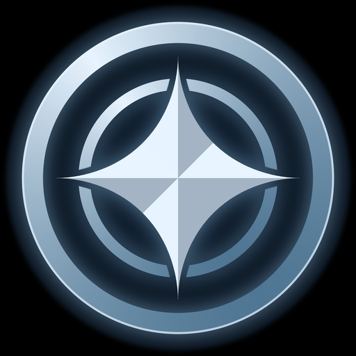

CmdGlas (Cmd Glass)
A free command tablet for Star Citizen on PC. Contracts, mining, blueprints, ship loadouts, hauling and harvestables in one browser page. Nothing to install.
What CmdGlas has
Command tablet
Free. Runs in your browser on a second screen, tablet or phone: contracts, mining, blueprints, loadouts, hauling and route tools.
Open the tabletCommand Deck
A touch deck for your saved game keybinds: one tap sends the key you already use. For a Windows PC screen or the CORSAIR XENEON EDGE.
See it in the shopKneeboard + Builder
Your own reference pages, always on top of the game. Build them yourself with the Builder.
See it in the shopSpeech Petal
A glowing petal for your stream that moves with your voice, VoiceAttack or music. More petals and skins coming.
See it in the shopCrew calls
Plain-word crew coordination cards: the clock, high / level / low, contacts, turn callouts.
Open the crew cardCommand Deck for the XENEON EDGE
The EDGE widget needs the free CmdGlas Command Deck EDGE Link program on your PC. No account, no license key.
Get the free Link